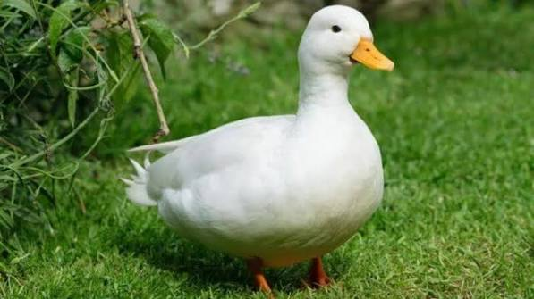

The Black Goose Bistro offers casual lunch and dinner fare in a relaxed atmosphere. The menu changes regularly to highlight the freshest local ingredients.
You have fun. We'll handle the cooking. Black Goose Catering can handle events from snacks for a meetup to elegant corporate fundraisers.
Seekonk, Massachusetts;
Monday through Thursday 11am to 9pm; Friday and
Saturday, 11am to midnight